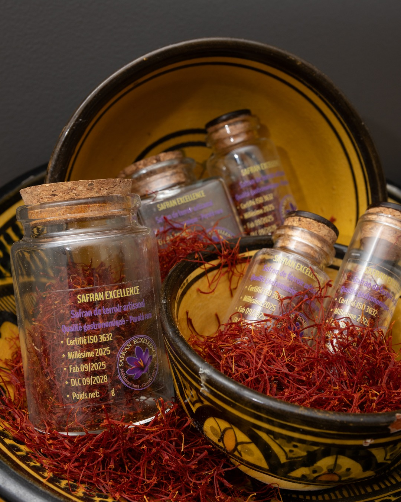
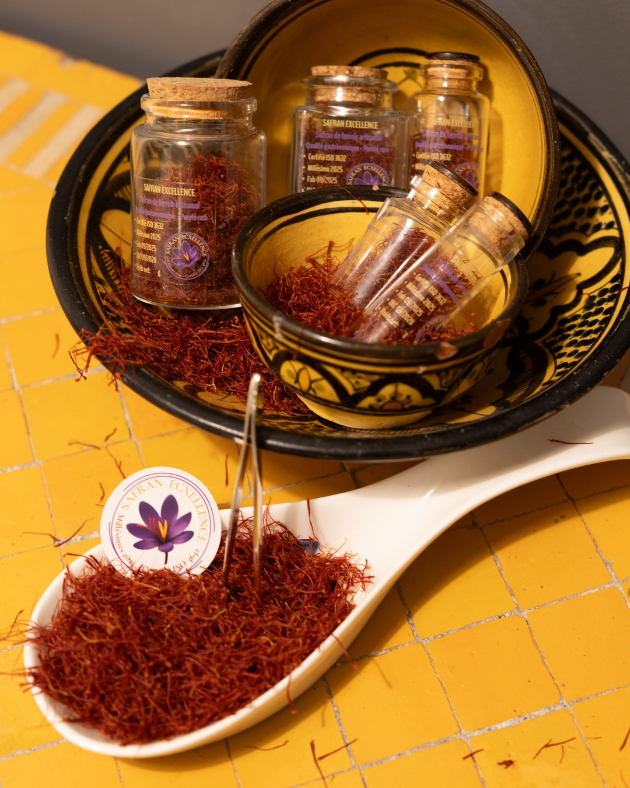
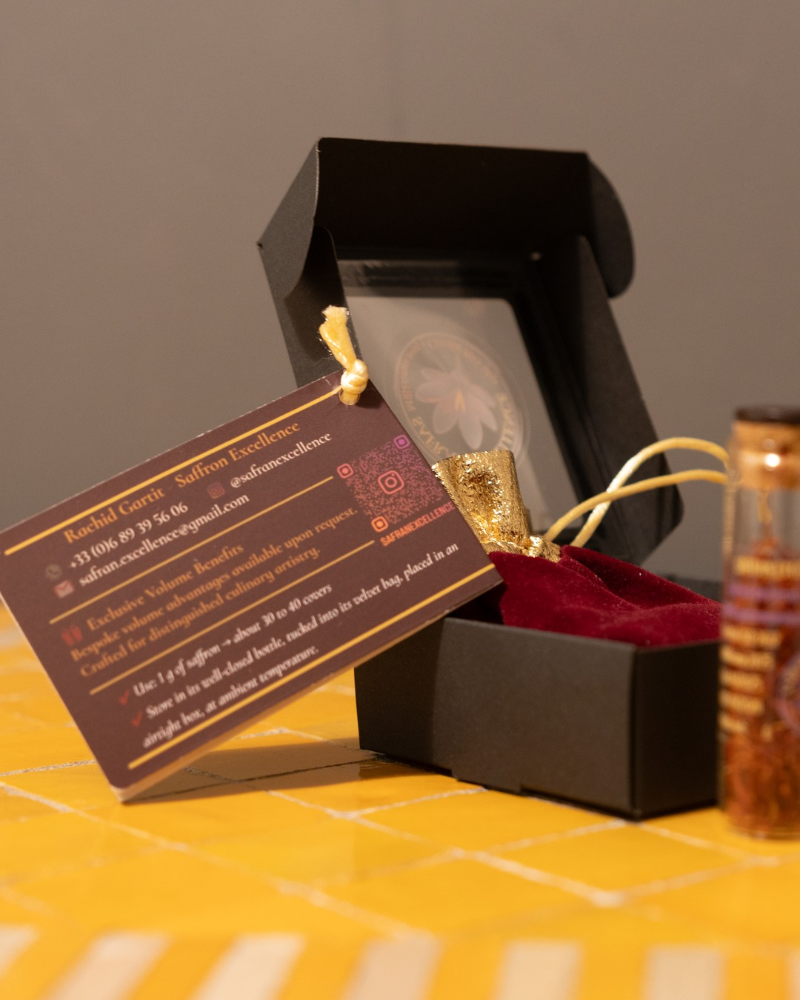

A demanding place, where every flower grows slowly
Ikenioun is a small village at 1,400 m in Morocco's Atlas mountains.
- Altitude1,400 m
- GroundAncient volcanic ground, soil naturally rich in minerals
- ClimateDry mountain climate, with cold winters and snow in some years
- GrowingWithout pesticides or chemicals
This terroir, together with our family's know-how, is where the “Excellence” in our name comes from.
Patience at every step
Picking, harvesting and trimming are done by hand, within the family and by people close to us. A know-how passed down from one generation to the next.
- CormsFrom our own field, selected by hand each season: the largest, firmest corms, around 8 g on average, replanted with no treatment.
- PickingBy hand at dawn, before sunrise. Picking stops once the sun is up.
- TrimmingEach stigma trimmed by hand, slowly and with great care, so its three threads stay joined, as they were on the flower.
- Pure stigmasOnly the red stigma is kept, with no yellow style.
- DryingDried naturally for three months, laid on cloth in a room sheltered from light and damp, at room temperature.
- Moisture9.6 % in the lab report (ISO standard ≤ 12 %).
My family grows it; Rachid checks, packs and delivers it himself. No middleman: excellence you can trace, from our field to your kitchen, and on to your guests.
What you get in the dish
Lot 01 was analysed in France by YesWeLab, an independent COFRAC-accredited laboratory (ISO/IEC 17025), to the ISO 3632 standard. It is compliant on all four criteria.
- Flavour · picrocrocin82.9At the highest level of the standard. A deep, refined taste that adds depth without overpowering.
- Aroma · safranal38.9A floral, honeyed aroma that holds through cooking.
- Colour · crocin188.3A vibrant golden hue in sauces, rice and desserts.
- Moisture9.6%Well below the 12% limit. The saffron keeps its strength over time.
Harvest November 2024 · analysed 08/10/2025 · sample Saf251891. The real test is still your kitchen.
View the lab report


The full PDF is available on request, by WhatsApp or email.

Buy less, use more
about 25 to 33 mg per plate
A little goes a long way when the saffron is strong.
Taste first. Pay only if convinced.

- Rachid brings the pack to your kitchen in person whenever possible, otherwise it comes by post. Nothing to pay when you receive it.
- Inside: 1 g for you to taste, at no cost (30 to 40 plates), and a sealed 5 g jar.
- You have three weeks to decide.
- Convinced? Keep the 5 g jar and you receive the invoice. Not convinced? Post the jar back sealed, with the prepaid return label already in the box. The return is on us.